Manual dos Serviços de terceiros
Passo a passo completo dos Serviços de terceiros (película, plotagem, pintura, lavagem, funilaria, mecânica, corte e dobra e pintura eletrostática), com fotos: pedir o serviço de qualquer tela, o Quadro, a Agenda e a Lista, agendar, dar como realizado, o pedido de pagamento ao Financeiro, a saída da Vistoria de pátio, a ordem de serviço em lote da pintura eletrostática, o contrato impresso, o relatório do mês por prestador (com planilha e folha para imprimir), os cadastros de prestadores e tipos, quem recebe cada aviso, quem pode o quê e as dúvidas comuns. Atualizado em 25/11/2026.
Parte 1Antes de começar
Para quem é este manual
Este manual é para todo mundo que pede, agenda ou confere um serviço feito por quem é de fora da fábrica: película, plotagem, pintura, pintura eletrostática, lavagem, funilaria, mecânica, corte e dobra e outros. Ele mostra cada tela, o que cada botão faz, o que o sistema grava quando você clica e quem é avisado depois.
Todas as fotos usam dados de exemplo (clientes, vendas, prestadores e nomes inventados). Nenhum serviço real aparece aqui.
Como cada passo a passo está escrito
- Quando usar: a situação em que você precisa daquele passo.
- Quem faz: quem tem o botão.
- Passo a passo: os cliques, na ordem.
- O que acontece: o que o sistema grava e quem é avisado.
- Vai para: a coluna seguinte do quadro.
O serviço em uma página
Um serviço de terceiro é um pedido de um trabalho que a fábrica entrega a um prestador de fora. Ele tem um número (TS-00044), um tipo, um prestador, um dia marcado, um valor combinado antes e um valor final depois que o trabalho é feito. Todo mundo pode pedir e todo mundo vê todos os serviços; cada um mexe no que é seu.
- A definir
- Agendado
- Realizado
| Coluna | O que significa | Quem age |
|---|---|---|
| A definir | O serviço foi pedido; falta escolher o prestador e marcar o dia | Quem pediu (e, em película, plotagem e pintura, a Adaptação marca o dia) |
| Agendado | Prestador, dia e período marcados | Quem pediu ou a Adaptação dá como realizado |
| Realizado | O serviço foi feito e conferido, com o valor final | O Financeiro recebe o pedido de pagamento |
| Cancelado | O pedido foi cancelado, com o motivo (não aparece no quadro; fica no filtro Cancelados) | Ninguém: o cancelado não volta, peça de novo |
Voltar um serviço de coluna ou cancelar sempre pede um motivo, que fica no histórico. Nada se apaga.
Várias coisas não são colunas, são selos que o sistema calcula sozinho no cartão: Sem prestador, Sem data, Atrasado, Choque de data, Hoje, No prestador desde…, A pagar, Pagamento pedido e Pago. Assim ninguém precisa de um passo a mais para atualizar.
Quem é quem
| Quem | O que faz no serviço |
|---|---|
| Qualquer usuário | Pede o serviço, vê todos os serviços (quadro, agenda, lista e a OP), imprime o contrato |
| Quem pediu | Edita o seu serviço (prestador, valor, dia), dá como realizado, cancela, pede o pagamento. Menos o dia de película, plotagem e pintura: esse é da Adaptação |
| Adaptação | Marca o dia de película, plotagem e pintura (mesmo quando o Comercial pediu), dá como realizado esses tipos, monta e fecha as ordens da pintura eletrostática, cadastra prestadores |
| Gerentes e Admin | Decidem sobre qualquer pedido. Só o Admin edita os tipos de serviço e o modelo do contrato |
| Quem vê valores | Vê o valor combinado, o final, a diferença, o contador A pagar e o relatório com dinheiro. Quem não vê valores vê só as quantidades |
Palavras que aparecem na tela
| Palavra | O que significa |
|---|---|
| Tipo de serviço | A categoria do trabalho (Película, Lavagem, Corte e dobra…). O tipo diz quem marca o dia e se usa ordem em lote |
| Prestador | A empresa ou pessoa de fora que faz o serviço (cadastro próprio do módulo, não o de fornecedores do Compras) |
| Ligação | A OP, a OS do SAC, a demanda ou o projeto da Engenharia a que o serviço pertence |
| Venda | O número da venda sem o /NN da unidade. Os carros da mesma venda andam juntos num cartão de grupo |
| Valor combinado | O que ficou combinado com o prestador antes |
| Valor final | O que o prestador cobrou depois; é obrigatório ao dar como realizado, até zero |
| Visita | Os serviços da mesma venda, mesmo tipo, mesmo prestador e mesmo dia: contam uma visita só (no Quadro, na Agenda, no contrato e no choque de data) |
| Choque de data | O mesmo prestador tem duas visitas diferentes no mesmo dia e período. Só avisa, nunca impede |
| Ordem de serviço em lote | Para a pintura eletrostática: várias peças de vários serviços vão juntas ao prestador, numa ordem assinada (número OT-00001) |
| Contrato | A folha impressa que o prestador assina, de qualquer serviço |
| Saída da vistoria | O registro da Vistoria de pátio de que o carro ou a peça saiu para o prestador |
Parte 2A tela de Serviços de terceiros
Visão geral
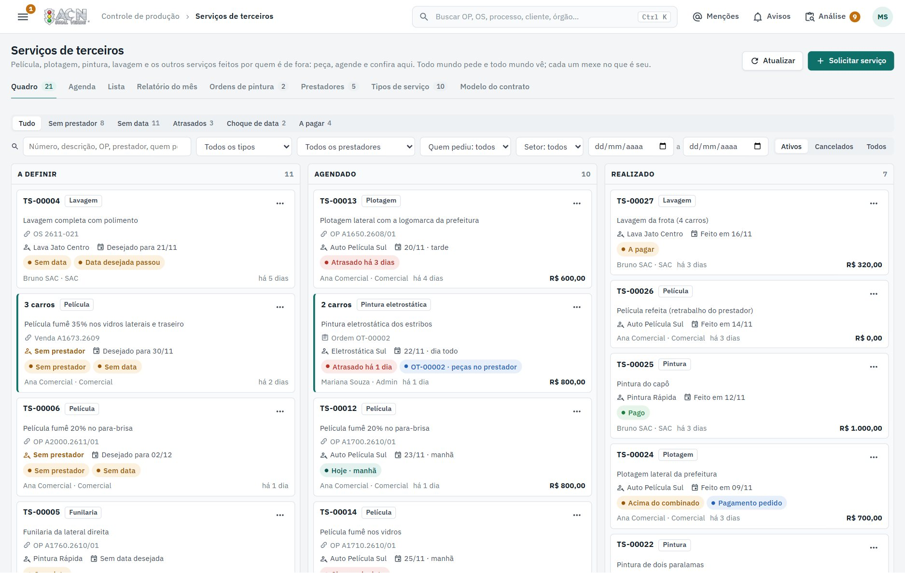
No alto ficam o título e dois botões: Atualizar e Solicitar serviço (botão verde). Logo abaixo ficam as abas e, nas três visões dos serviços (Quadro, Agenda e Lista), a barra de contadores e filtros.
| Aba | Para que serve | Quem edita |
|---|---|---|
| Quadro | Abre primeiro: os serviços em três colunas, com o número de serviços em aberto na aba | Quem pode mexer em cada serviço |
| Agenda | Quem está onde em cada dia: semana ou mês, por prestador ou por tipo | (só consulta; clicar abre o serviço) |
| Lista | Os mesmos serviços em tabela, para conferir e filtrar | Quem pode mexer em cada serviço |
| Relatório do mês | Por prestador, no mês: quantos serviços, quanto combinado, quanto cobrado e o que falta pedir ao Financeiro | (só consulta) |
| Ordens de pintura | A fila de serviços esperando ordem e as ordens em lote da pintura eletrostática | Admin, gerentes e Adaptação |
| Prestadores | O cadastro de quem faz os serviços | Admin, gerentes e Adaptação |
| Tipos de serviço | Os tipos, com quem marca o dia | Só o Admin |
| Modelo do contrato | O texto e os dados das empresas que saem no contrato e na ordem | Só o Admin (todos leem) |
O sistema lembra a última visão (Quadro, Agenda ou Lista) de cada pessoa neste computador.
Contadores e filtros
Os contadores do alto contam e também filtram (clique para ligar, clique de novo para desligar). Eles valem nas três visões.
| Contador | O que conta |
|---|---|
| Sem prestador | Pedidos em A definir que ainda não têm prestador escolhido |
| Sem data | Pedidos em A definir sem dia marcado |
| Atrasados | Agendados cujo dia já passou e que não foram dados como realizados |
| Choque de data | Agendados em que o mesmo prestador tem outra visita no mesmo dia e período |
| A pagar | Realizados, com valor final maior que zero, cujo pagamento ainda não foi pedido ao Financeiro (só aparece para quem vê valores) |
A fileira dos contadores começa com Tudo (sem nenhum contador ligado). Embaixo vêm a busca (número, descrição, OP, prestador, quem pediu), as listas de tipo, prestador, quem pediu (com a opção Só os que eu pedi) e setor de quem pediu, o período (dois campos de data, de … a …, que olham o dia do serviço: o dia feito, o agendado ou, se ainda não foi marcado, o desejado) e os botões Ativos, Cancelados e Todos. Quando há filtro ligado aparece Limpar filtros (N).
O Quadro
O cartão mostra o tipo, o número (TS-…), a descrição, a ligação (OP, OS, demanda ou projeto), o prestador, o dia e o período, o valor combinado (só para quem vê valores) e os selos.
Cartão de grupo (venda com vários carros)
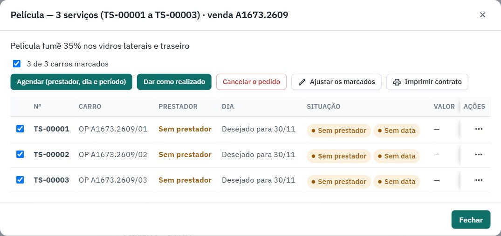
Uma venda com vários carros gera um serviço por carro (cada OP /NN). Para não virar dezenas de cartões iguais, o Quadro junta os carros da mesma venda, do mesmo tipo, da mesma coluna, do mesmo prestador e do mesmo dia num cartão de grupo ("Película · venda 1673.2609 · 10 carros"). Clique nele para abrir a lista dos carros, marque os carros que quer mexer (há Marcar todos) e use os botões da janela: os passos (Agendar, Dar como realizado…), Ajustar os marcados (prestador, valor combinado, dia desejado e observação de todos de uma vez, deixando em branco o que não quer mudar), Montar ordem de serviço e Imprimir contrato. Tudo vale só para os marcados e é tudo ou nada: se um falhar, nenhum muda. O carro que sai do grupo (outro dia, outro prestador, cancelado) vira cartão próprio.
Mover um serviço
- Arrastar o cartão para outra coluna (só no computador), ou
- o menu ⋯ do cartão, no grupo Passar para (no celular e no tablet é o caminho).
Quando o serviço não pode ir para a coluna escolhida, a tela diz o motivo (por exemplo: "o dia de película é marcado pela Adaptação"). Soltar na coluna Agendado abre a janela de agendar; soltar em Realizado abre a de dar como realizado; voltar de coluna ou cancelar pede o motivo.
A Agenda
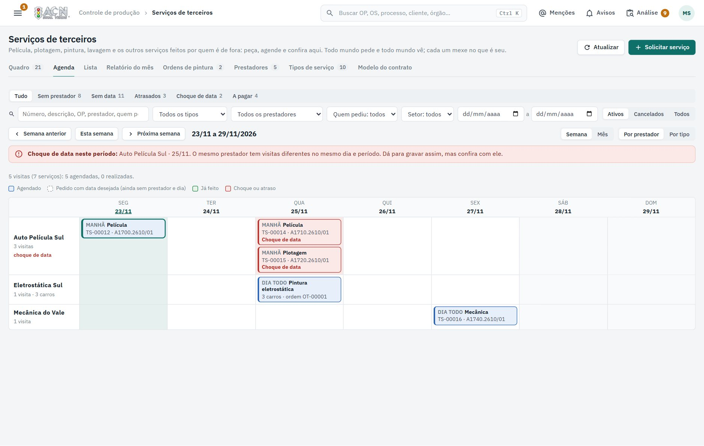
A Agenda mostra a visita, não cada carro. Uma visita é o mesmo agrupamento do Quadro: "manhã · Película · 3 carros · venda 1673.2609".
- Semana (segunda a domingo) ou Mês (grade; mostra até 3 visitas por dia e mais N, que leva à semana).
- Por prestador (uma linha por prestador, com Sem prestador por último) ou por tipo.
- Os botões anterior, esta e próxima andam no tempo; o sistema lembra a escolha.
- Choque de data aparece em vermelho no cartão, no dia e na faixa do alto.
- Atrasado há N dias, hoje, o realizado esmaecido e o pedido que só tem dia desejado (tracejado).
- Clicar na visita abre a janela do serviço (ou a do grupo, ou a da ordem).
A Lista
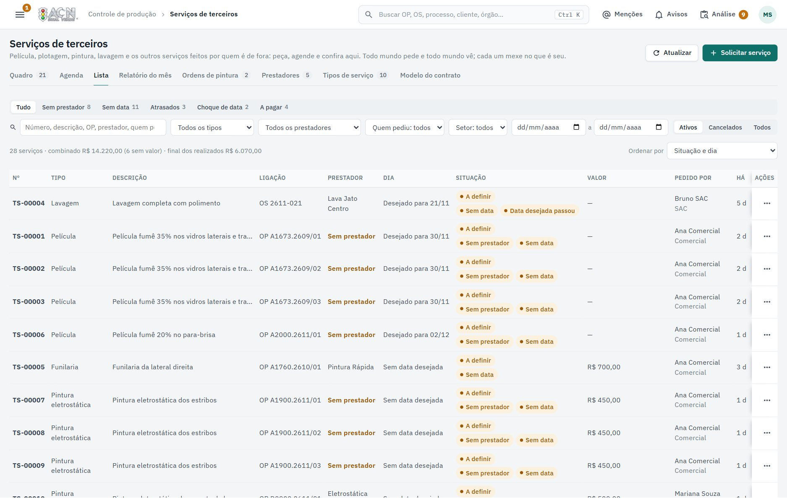
A Lista tem os mesmos serviços, filtros e contadores em tabela, para conferência. A coluna Ações fica fixa à direita. O menu ⋯ de cada linha é o mesmo do Quadro.
O Relatório do mês
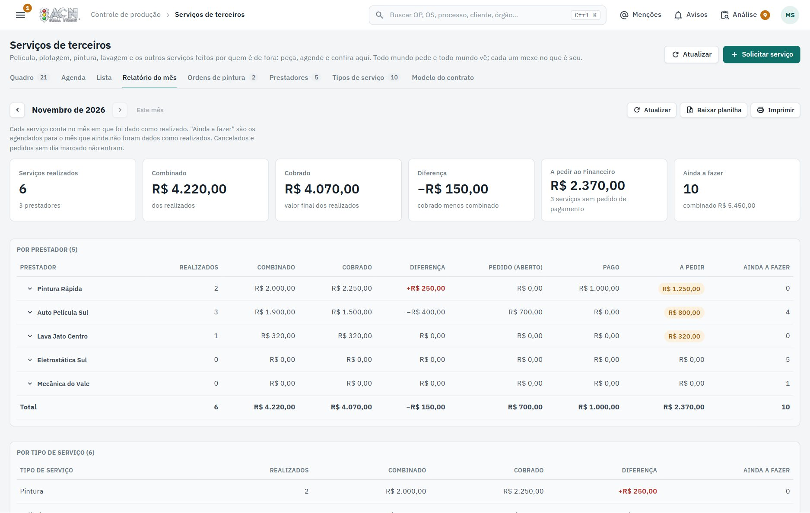
O relatório responde: quantos serviços cada prestador fez no mês, quanto estava combinado, quanto cobrou e o que ainda falta pedir ao Financeiro.
A regra que vale para todas as contas: o serviço conta no mês em que foi dado como realizado (o dia em que foi feito). Ao lado vem Ainda a fazer: os serviços agendados para o mês que ainda não foram dados como realizados. Pedidos sem dia marcado e cancelados não entram.
No alto ficam o mês (◀ anterior, ▶ seguinte, Este mês), Atualizar, Baixar planilha e Imprimir. Abaixo, os cartões:
| Cartão | O que mostra |
|---|---|
| Serviços realizados | Quantos e em quantos prestadores |
| Combinado | A soma dos valores combinados dos realizados (diz quantos estão sem valor combinado) |
| Cobrado | A soma dos valores finais |
| Diferença | Cobrado menos combinado, só dos serviços que têm os dois valores (vermelho quando cobrou mais) |
| A pedir ao Financeiro | O valor dos realizados sem pedido de pagamento: a mesma conta do contador A pagar do Quadro |
| Ainda a fazer | Agendados no mês e sem baixa, com o combinado |
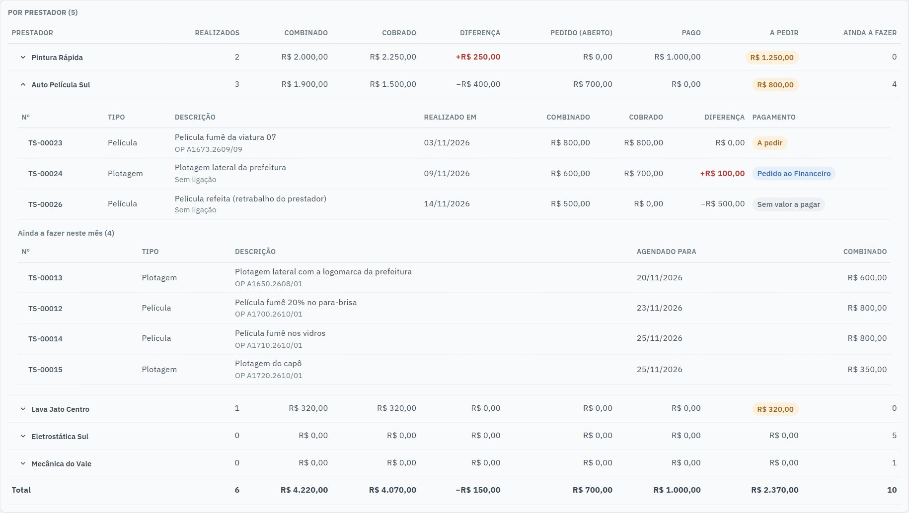
Em Por prestador, clique no nome do prestador para abrir a lista dos serviços dele: o número (clique para abrir o serviço), o tipo, a descrição e a ligação, o dia, os valores e a situação do pagamento (Pago, Pedido ao Financeiro, A pedir, Sem valor a pagar ou Não conferido). Por tipo de serviço repete as contas por tipo.
Parte 3Passo a passo dos serviços
Pedir um serviço
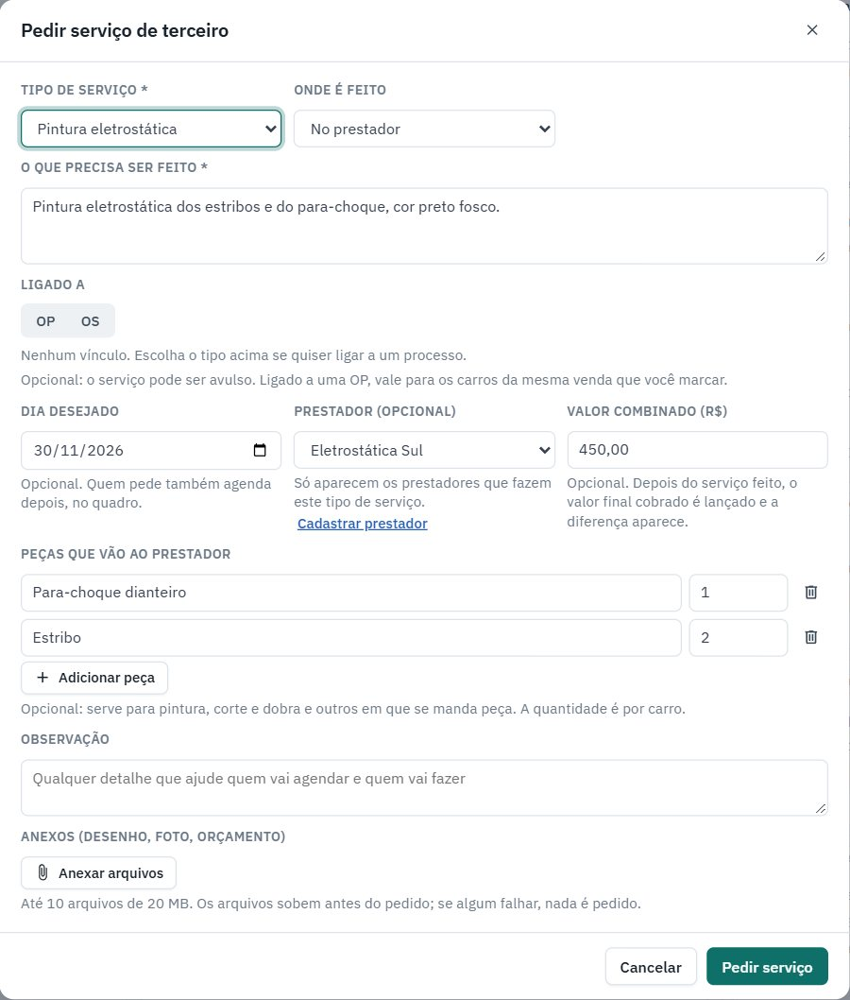
Quando usar: quando um trabalho vai ser feito por alguém de fora e você quer que o sistema acompanhe o prestador, o dia, o valor e a conclusão.
Quem faz: qualquer usuário.
Por onde se pede. O mesmo pedido abre de vários lugares, sempre já ligado ao que você estava vendo:
| De onde | Onde fica o botão |
|---|---|
| Esta tela | Solicitar serviço (botão verde do alto) |
| OP | Menu Mais ações da OP › Solicitar serviço de terceiro e a caixinha Necessita serviço de terceiro da OP (no lote, um pedido para todos os carros da venda) |
| OS do SAC | Menu ⋯ da OS › Serviço de terceiro |
| Engenharia | No cartão do projeto do Desenvolvimento: Solicitar serviço de terceiro (corte e dobra com o desenho anexado) |
| Serralheria | No cabeçalho da tela da Serralheria: Solicitar serviço de terceiro |
| Almoxarifado | No Kiting: Solicitar serviço de terceiro (não aparece no Telecom) |
Passo a passo
- Clique no botão de pedir. A janela Pedir serviço de terceiro abre.
- Escolha o Tipo de serviço * (Película, Lavagem, Corte e dobra…). Em Onde é feito diga se é Na fábrica ou No prestador (ou deixe em A definir).
- Escreva O que precisa ser feito * (pelo menos 3 letras).
- Em Ligado a, escolha a OP ou a OS a que o serviço pertence. É opcional: o serviço pode ser avulso. Quando o pedido vem de uma OP (ou de uma OS), a ligação já vem preenchida e travada.
- Se a OP é de uma venda com vários carros, a janela mostra Carros que levam o serviço, com Marcar todos e Desmarcar todos: marque quais recebem o serviço (até 100 de uma vez).
- Escreva o dia. Em película, plotagem e pintura o campo se chama Para quando você precisa: é só um pedido de data, que a Adaptação lê e usa para marcar o dia de verdade. Nos outros tipos o campo é Dia desejado.
- Se já souber, escolha o Prestador (opcional) (a lista traz só quem faz aquele tipo; quem pode cadastrar vê o atalho Cadastrar prestador) e o Valor combinado (R$) (o campo do valor só aparece para quem vê valores; com vários carros, o valor vale para cada um).
- Em Peças que vão ao prestador, escreva cada uma (Peça e Qtd) e use Adicionar peça. É esta lista que sai impressa na ordem de serviço.
- Se precisar, escreva uma Observação e use Anexar arquivos (desenho de corte e dobra, foto, orçamento): até 10 arquivos de 20 MB por pedido e 30 por serviço.
- Clique em Pedir serviço (ou Pedir N serviços, quando há vários carros).
O que acontece: nasce um serviço por carro (TS-00044, TS-00045…), todos juntos ou nenhum, em A definir. Quem pediu fica como o dono de cada um.
Vai para: coluna A definir do Quadro.
Agendar
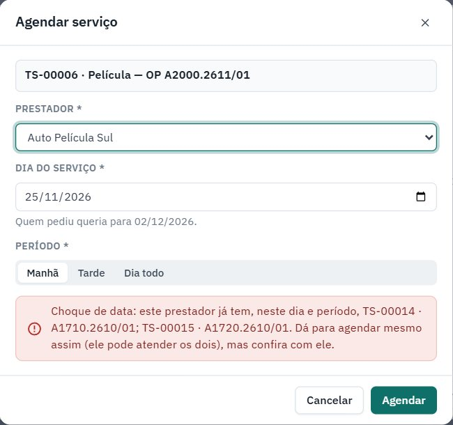
Quando usar: para escolher o prestador e marcar o dia e o período de um serviço A definir. Também serve para reagendar um serviço já agendado.
Quem faz: quem tem o poder de marcar o dia do tipo:
- Película, plotagem e pintura: a Adaptação (aba Adaptação), os gerentes e o Admin, mesmo quando o Comercial pediu. Quem pediu espera, com o selo Sem data, e a Adaptação vê o dia desejado que ele escreveu.
- Os outros tipos: quem pediu (mais gerentes e Admin).
O Admin muda essa regra por tipo na aba Tipos de serviço, sem mexer em código.
Passo a passo
- No cartão, abra o menu ⋯ (grupo Passar para) e escolha Agendar (prestador, dia e período); ou abra o serviço (ou o grupo de carros) e use o mesmo botão em Passos do serviço; ou arraste o cartão para a coluna Agendado.
- Escolha o Prestador * (a lista traz só os ativos que fazem aquele tipo).
- Escolha o Dia do serviço * e o Período (Manhã, Tarde ou Dia todo).
- Se o mesmo prestador já tem outra visita nesse dia e período, aparece um aviso vermelho de choque de data com o que já está marcado. Ele só avisa: você pode agendar mesmo assim.
- Clique em Agendar. Para mudar o dia, o período ou o prestador de um serviço já agendado, use Reagendar (outro dia, período ou prestador): a janela se chama Reagendar e tem Motivo do reagendamento (opcional).
O que acontece: o serviço fica com prestador, dia e período; o histórico guarda quem agendou e quando. A mesma venda, tipo, prestador e dia contam uma visita só: agendar os 10 carros de uma venda no mesmo dia não é choque entre eles.
Vai para: coluna Agendado. Aparece na Agenda, no Calendário e, se o dia passar sem baixa, vira Atrasado.
Dar como realizado
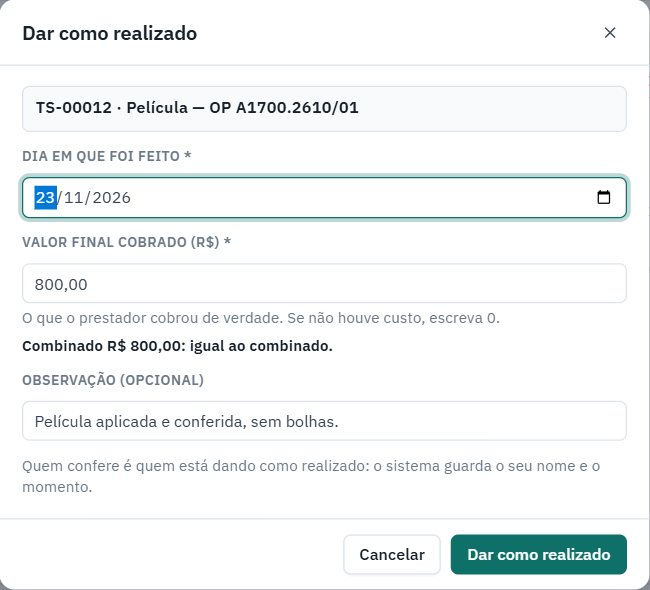
Quando usar: quando o prestador entregou o trabalho e você conferiu.
Quem faz: quem pediu; nos tipos da Adaptação (película, plotagem, pintura), quem pediu ou a Adaptação; gerentes e Admin sempre.
Passo a passo
- No menu ⋯ do cartão (grupo Passar para), escolha Dar como realizado; ou use o mesmo botão em Passos do serviço, na janela do serviço; ou arraste para Realizado.
- Se o serviço ainda não tinha prestador, a janela pede Prestador que fez o serviço *: escolha agora. Se já tinha, esse campo nem aparece (em vários carros, só vale para os que ainda não tinham).
- Informe o Dia em que foi feito * (não pode ser no futuro).
- Informe o Valor final cobrado (R$) *. É obrigatório até para quem não vê valores, e zero vale (retrabalho sem cobrança). Em vários carros a janela pede o valor final de cada serviço.
- Se quiser, escreva a Observação (opcional).
- Clique em Dar como realizado.
O que acontece: o serviço guarda o dia, o valor final e quem conferiu (você). A diferença entre o combinado e o final fica visível; o selo Acima do combinado (âmbar) aparece quando o prestador cobrou mais.
Vai para: coluna Realizado. Entra no Relatório do mês do mês do dia em que foi feito.
Voltar, reabrir e cancelar
Quando usar: quando o dia mudou, o serviço foi dado como realizado por engano ou o pedido não vale mais.
Quem faz: quem pode mexer no serviço (os mesmos de dar como realizado).
| Passo | Onde está | O que faz |
|---|---|---|
| Voltar para A definir (tira o dia marcado) | Serviço Agendado | Apaga o dia e o período; o prestador fica |
| Reabrir (volta para Agendado) | Serviço Realizado | Apaga o dia feito e o valor final; o serviço volta para Agendado |
| Cancelar o pedido (serviço A definir) / Cancelar o serviço (Agendado) | Grupo Encerrar do menu | Encerra o serviço |
Estes passos aparecem em dois lugares: no menu ⋯ do cartão (os de voltar e reabrir ficam em Passar para; o cancelar, em Encerrar) e, na janela do serviço, nos botões de Passos do serviço (o cancelar em vermelho).
Todos pedem o motivo (pelo menos 5 letras), que vai para o histórico. O cancelado não volta: se for preciso, peça o serviço de novo. Para ver os cancelados, use o filtro Ver (Ativos, Cancelados ou Todos) da barra de filtros.
Pedir o pagamento ao Financeiro
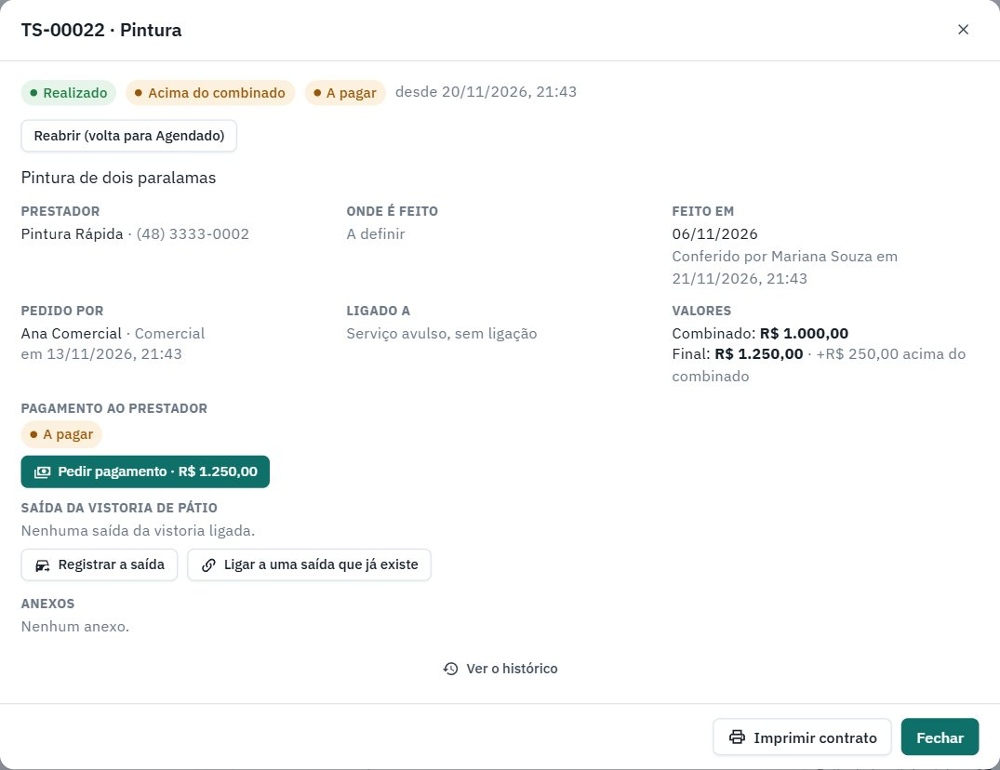
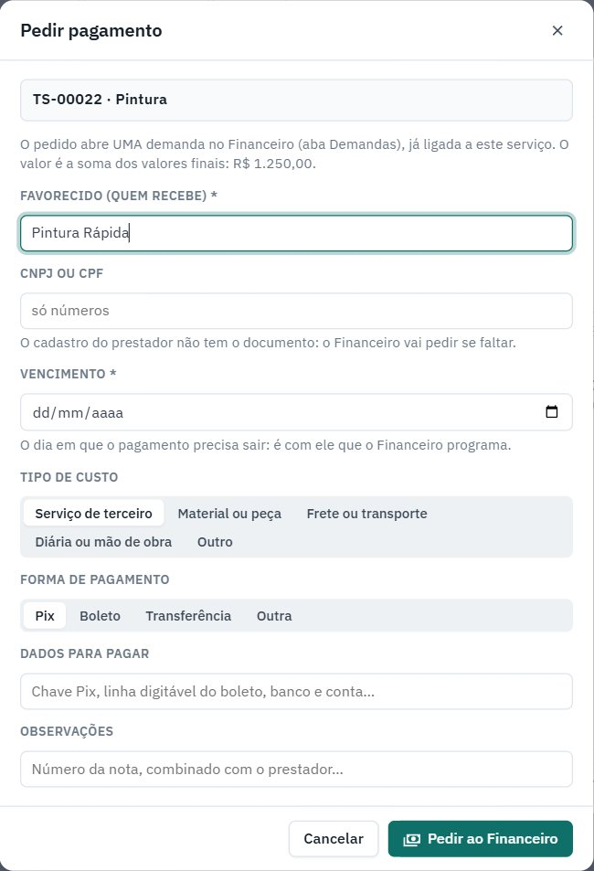
Quando usar: com o serviço Realizado e o valor final maior que zero. É o que faz o contador A pagar baixar.
Quem faz: quem pode mexer no serviço. (O contador A pagar só aparece para quem vê valores.)
Passo a passo
- Abra o serviço (ou o grupo de carros) e, na caixa Pagamento ao prestador, clique em Pedir pagamento · R$ ….
- A janela já vem preenchida: Favorecido (quem recebe) *, CNPJ ou CPF (do cadastro do prestador).
- Escolha o Tipo de custo, o Vencimento *, a Forma de pagamento e escreva os Dados para pagar (chave Pix, linha digitável do boleto, banco e conta) e as Observações.
- Clique em Pedir ao Financeiro.
O que acontece:
- Nasce uma demanda no Financeiro, já preenchida.
- O valor nunca vem da tela: o banco soma os valores finais gravados dos serviços do pedido.
- Um pedido por visita ou por ordem, de um prestador só. Os carros de uma mesma visita entram juntos.
- O serviço ganha o selo Pagamento pedido; quando o Financeiro conclui a demanda, vira Pago. Se a demanda for cancelada, o serviço volta a "A pagar" e dá para pedir de novo.
Quando o carro ou a peça sai: a Vistoria de pátio
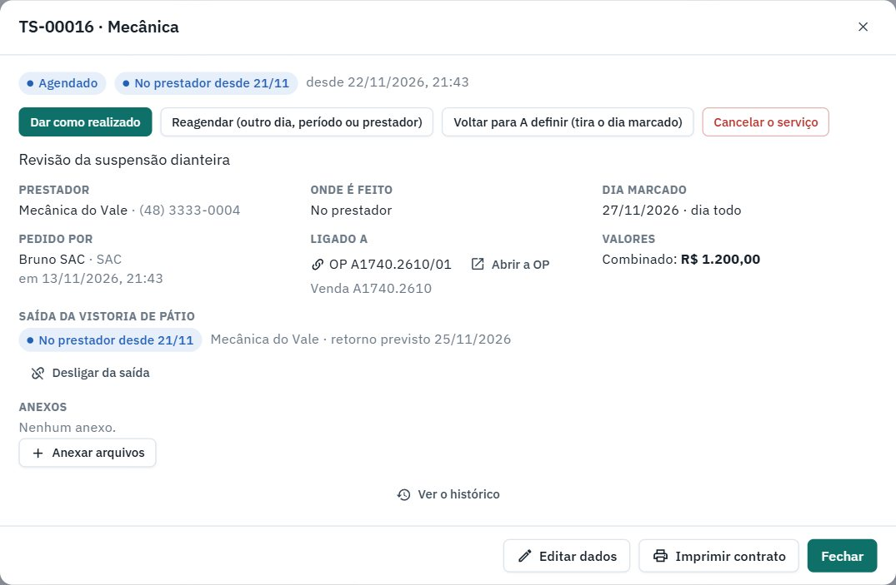
Quando usar: quando o serviço é no prestador (o carro ou a peça sai da fábrica). O serviço aponta a saída da Vistoria de pátio e mostra se o carro já saiu e voltou.
Quem faz: quem pode mexer no serviço.
Passo a passo
- Abra o serviço (ou o grupo) Agendado ou Realizado e olhe a caixa Saída da vistoria de pátio.
- Registrar a saída: abre a Vistoria de pátio já preenchida (o tipo de saída vem do tipo do serviço: pintura eletrostática = "Pecas para Pintura", lavagem = "Lavagem" etc.). Salve a saída lá; ela é ligada ao serviço sozinha.
- Ligar a uma saída que já existe: escolha, na lista das saídas que ainda não voltaram, a que já foi registrada.
- Desligar da saída: desfaz a ligação (pede motivo).
O que acontece: o serviço mostra No prestador desde dd/mm e, quando a Vistoria registra o retorno, Voltou em dd/mm. Vários serviços podem ligar à mesma saída.
A ordem de serviço em lote (pintura eletrostática)
Quando usar: quando várias peças, de vários serviços do mesmo prestador, vão juntas para a pintura eletrostática. Em vez de um papel por serviço, sai uma ordem (OT-00001) com a relação de todas as peças, que o prestador assina.
Quem faz: Admin, gerentes e Adaptação. Quem só pediu vê a ordem e o selo, mas não mexe.
- Aguardando assinatura
- Peças no prestador
- Fechada
Montar a ordem
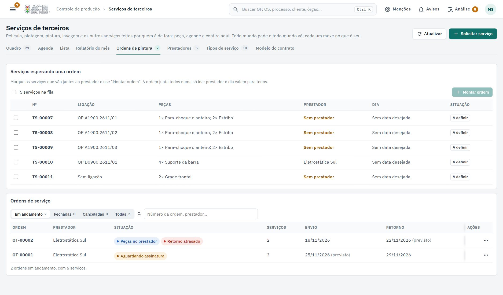
- Abra a aba Ordens de pintura. A fila Serviços esperando uma ordem lista os serviços do tipo que usa ordem em lote, em A definir ou Agendado e fora de outra ordem ativa.
- Marque os serviços que vão juntos (Marcar todos) e clique em Montar ordem com N. (Também dá para montar pelo grupo de carros, em Montar ordem de serviço.)
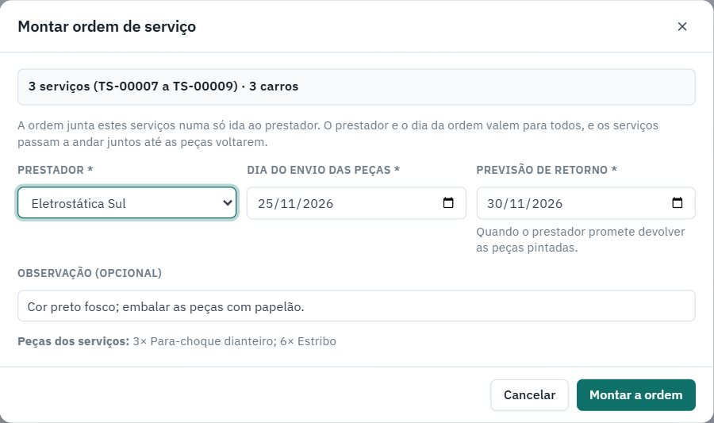
- Escolha o Prestador * (só aparece quem faz todos os tipos marcados), o Dia do envio das peças * e a Previsão de retorno * (quando o prestador promete devolver as peças pintadas), e a Observação (opcional) (por exemplo, "cor RAL 9005, cuidar do vidro").
- Clique em Montar a ordem.
O que acontece: a ordem nasce Aguardando assinatura. O prestador e o dia da ordem valem para todos os serviços, que passam para Agendado e andam juntos.
Imprimir, assinar e enviar as peças
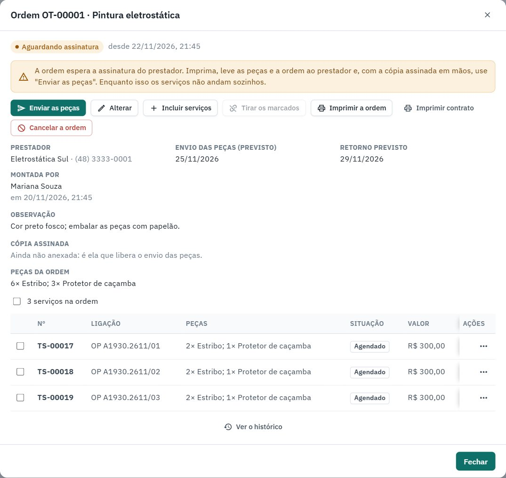
- Na janela da ordem, clique em Imprimir a ordem: sai a folha com a relação de peças e uma caixinha de conferência por linha.
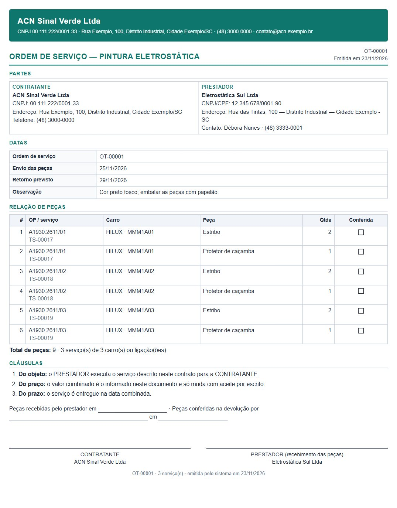
- Leve as peças e a ordem ao prestador e traga a cópia assinada.
- Clique em Enviar as peças.
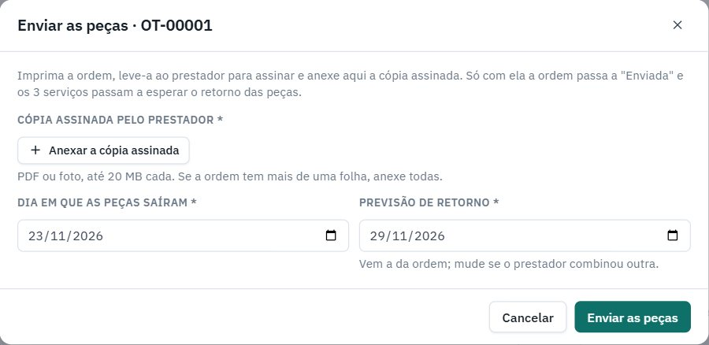
- Informe o Dia em que as peças saíram * e a Previsão de retorno *, e anexe a cópia assinada.
- Confirme.
O que acontece: a ordem só vira "Enviada" com a cópia assinada anexada. A cópia sobe antes da gravação e, se o banco recusar, ela sai de novo: nada fica pela metade. A ordem passa a Peças no prestador.
Registrar o retorno
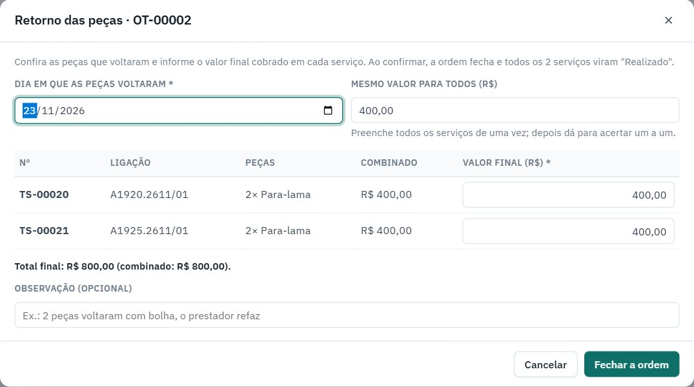
- Quando as peças voltarem, abra a ordem e clique em Registrar o retorno.
- Informe o Dia em que as peças voltaram *.
- Informe o valor final de cada serviço (ou use Mesmo valor para todos (R$); zero vale, negativo não). Quem vê valores vê o total ao lado do combinado.
- Clique em Fechar a ordem.
O que acontece: todos os serviços da ordem passam para Realizado de uma vez, cada um com o seu valor final e o dia do retorno. A ordem fica Fechada.
Alterar, incluir, tirar e cancelar
Cada botão vale só em uma fase da ordem:
| Botão | Quando aparece | O que faz |
|---|---|---|
| Alterar | Aguardando assinatura ou Peças no prestador | Muda o prestador, a previsão de retorno e a observação (no atraso, é aqui que se combina outra previsão) |
| Incluir serviços | Só Aguardando assinatura | Traz outros serviços do mesmo prestador para a ordem |
| Tirar os marcados | Só Aguardando assinatura | Tira serviços da ordem (pede motivo; a ordem nunca fica sem serviços) |
| Cancelar a ordem | Só Aguardando assinatura | Cancela a ordem inteira (pede motivo); os serviços voltam a ser mexidos um a um |
Depois que as peças foram enviadas, a ordem não pode mais ser cancelada nem ter serviços incluídos ou tirados: o caminho é Registrar o retorno. Imprimir a ordem e Imprimir contrato valem em qualquer fase (menos na ordem cancelada).
Imprimir o contrato
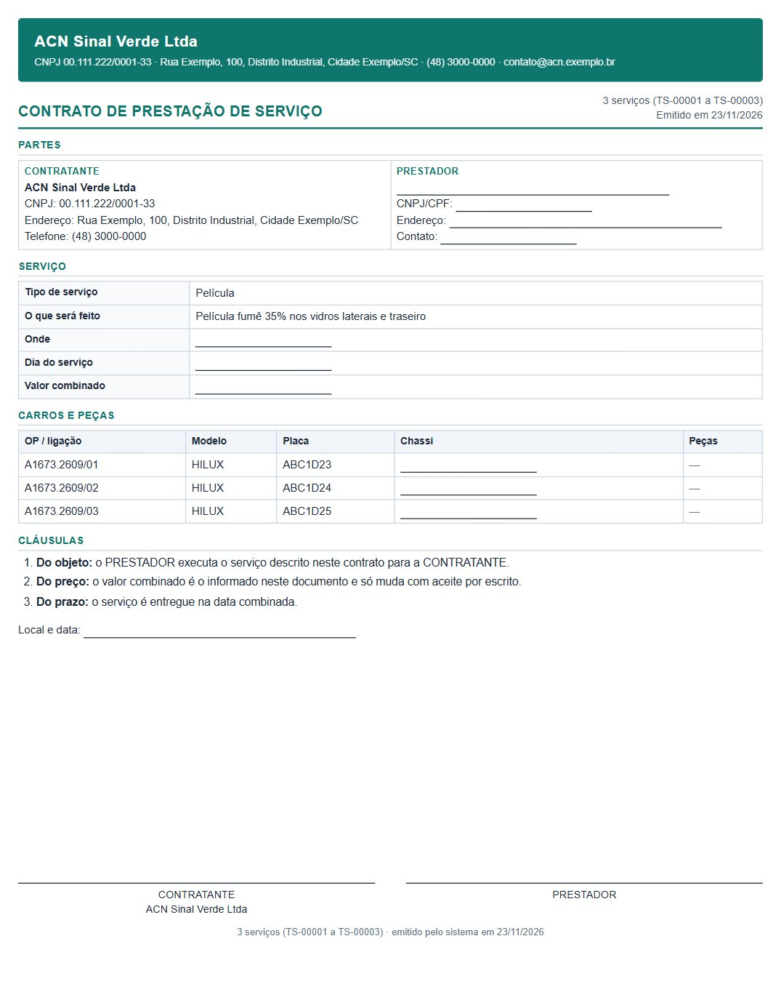
Quando usar: em todo serviço, antes de o prestador começar: é a folha simples que o prestador assina.
Quem faz: qualquer usuário.
Passo a passo
- No menu ⋯ do cartão, na janela do serviço, na do grupo ou na da ordem, clique em Imprimir contrato.
- Abre a janela pequena Imprimir o contrato. Escolha a Empresa que contrata * (ACN ou DETECH). Ela já vem sugerida pela OP: começa com D = DETECH, com A = ACN.
- Clique em Imprimir. A folha abre numa janela nova do navegador, pronta para imprimir ou salvar em PDF.
O que acontece:
- Um contrato por visita, com a lista dos carros.
- O que o cadastro não tem (CNPJ do prestador, endereço, chassi…) sai em branco para escrever à mão.
- Quem não vê valores imprime sem o valor.
- Se o prestador ainda não foi definido, ou se os serviços têm prestadores diferentes, a janela avisa em amarelo antes de imprimir.
- Se o texto do contrato ainda não foi aprovado, a janela avisa em vermelho que a folha vai sair como minuta.
A pintura da Serralheria
Quando acontece: quando a Serralheria conclui uma peça com pintura pedida.
- Ao concluir, o sistema abre sozinho um serviço de Pintura eletrostática em A definir, ligado à demanda, em nome de quem concluiu.
- Não nasce mais a requisição de compra no Compras para a pintura.
- A Produção recebe o aviso no WhatsApp: "escolha o prestador e o dia (ou entre numa ordem de pintura)".
- Se a abertura do serviço falhar, a demanda conclui mesmo assim e ganha o botão Pedir a pintura agora (para demandas concluídas há até 30 dias e ainda sem pedido).
- A demanda antiga, que já tinha pedido no Compras, não muda.
Onde ver os serviços de uma OP ou de uma OS
No Dossiê da OP e no resumo da OS do SAC há o quadro Serviços de terceiros:
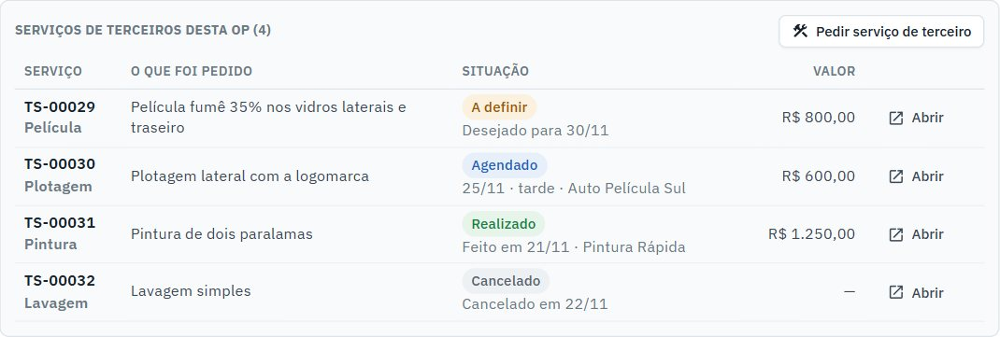
- Lista todos os serviços ligados (os cancelados também), com situação, prestador, dia e valor (para quem vê valores).
- O botão Pedir serviço de terceiro já vem ligado àquela OP ou OS.
- Abrir leva à janela do serviço.
- Lê uma vez ao abrir. Se a leitura falhar, uma faixa vermelha avisa e oferece Tentar de novo: nunca diz "nenhum serviço" no lugar do erro (nem deixa você pedir de novo sem conferir: o serviço pode já existir).
- O PDF do Dossiê não leva os serviços.
A OP que é só serviço de terceiro
Quando acontece: a venda é só um serviço de terceiro (por exemplo, só a plotagem do carro) e não há nada a fabricar, separar nem adaptar. Em vez de passar pelo PCP, pelo Almoxarifado e pela Adaptação, a OP vai direto ao prestador.
- Nova OP
- Aguardando serviço de terceiro
- Todos os serviços realizados
- Liberação Comercial
- Fiscal
- Na Nova OP, o Fluxo de Entrega tem a opção Somente serviço de terceiro. Ao escolhê-la, a tela pede os tipos de serviço (película, blindagem, plotagem, pintura ou outro) e o prazo de entrega (uma data). Não pede valor de mão de obra, previsão de chegada do veículo nem o prazo em dias da adaptação.
- A OP nasce direto em "Aguardando serviço de terceiro": não passa pelo PCP, não aparece na fila do Almoxarifado nem na da Adaptação.
- O serviço nasce sozinho ao criar a OP: um por tipo marcado e por unidade (num lote de 3 carros com plotagem e película, são 6 serviços), todos em A definir, com a descrição "Tipo — cliente" e o prazo da OP na observação. Aparecem no Quadro como qualquer outro serviço.
- Daí em diante é o passo a passo de sempre: agendar, dar como realizado, pedir o pagamento ao Financeiro.
- Quando todos os serviços da OP estão realizados (os cancelados não contam, mas ao menos um precisa ter sido feito), o sistema leva a OP sozinho à Liberação Comercial (ou direto ao Fiscal, se o faturamento foi antecipado). Não há Controle de Qualidade nesse caminho. A mudança fica no histórico da OP, com o setor "Serviços de terceiros".
- Se um serviço é reaberto (volta de Realizado para Agendado) antes de o Comercial liberar, a OP volta a esperar o prestador.
- Se todos os serviços forem cancelados, a OP fica parada onde está, para alguém decidir (pedir outro serviço ou cancelar a OP).
- No Dossiê da OP, se a OP é só de terceiro e não tem nenhum serviço, o quadro Serviços de terceiros mostra uma faixa vermelha avisando que ela não anda sem serviço, com o botão Pedir serviço de terceiro.
- Se a abertura dos serviços falhar ao criar a OP, a tela avisa em vermelho que a OP foi criada sem o serviço; abra a OP e use Pedir serviço de terceiro.
- Copiar OP de uma OP só de terceiro também abre os serviços de cada cópia.
Parte 4Cadastros e relatório
Prestadores
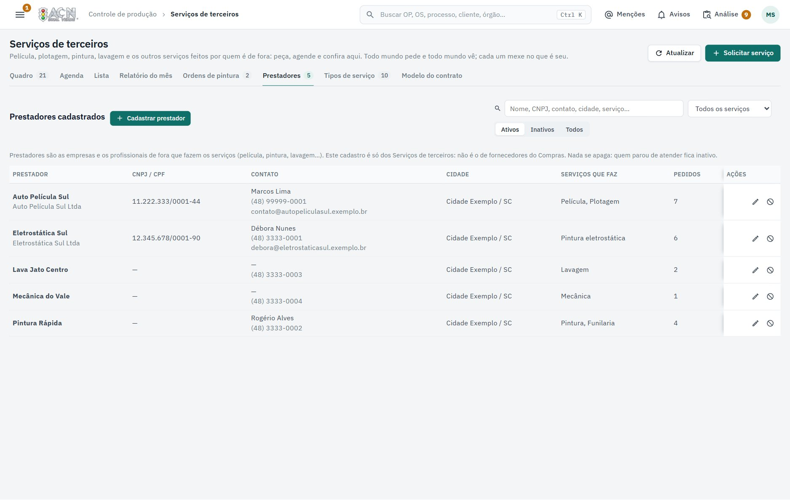
Quando usar: antes de agendar. O prestador é cadastrado uma vez e depois é só escolhido na lista. Este cadastro é próprio dos serviços de terceiros: não é o de fornecedores do Compras.
Quem faz: Admin, gerentes e a aba Produção. Os outros usuários podem ver a lista.
Passo a passo
- Abra a aba Prestadores e clique em Cadastrar prestador.
- Preencha Nome do prestador * (como o pessoal o conhece).
- Em Que serviços faz, escolha um ou mais tipos. Só quem faz o tipo aparece na lista ao agendar. Em branco, o prestador vale para qualquer serviço (a lista mostra "Qualquer serviço").
- Preencha o que tiver: Pessoa de contato, Telefone, E-mail, Razão social, CNPJ ou CPF, o endereço (Número, Complemento, Bairro, Cidade, UF) e a Observação (horário, prazo costumeiro, se busca o carro).
- Clique em Cadastrar.
O que acontece: o prestador passa a aparecer ao pedir e ao agendar. Razão social, CNPJ e endereço saem no contrato; o que faltar sai em branco para escrever à mão.
Na lista, Editar (lápis) muda os dados e Desativar tira o prestador das listas de escolha. Nada se apaga: os serviços antigos continuam mostrando o nome, e Reativar traz o prestador de volta. O filtro Situação mostra Ativos, Inativos ou Todos, e a coluna de serviços mostra quantos o prestador já tem.
Tipos de serviço
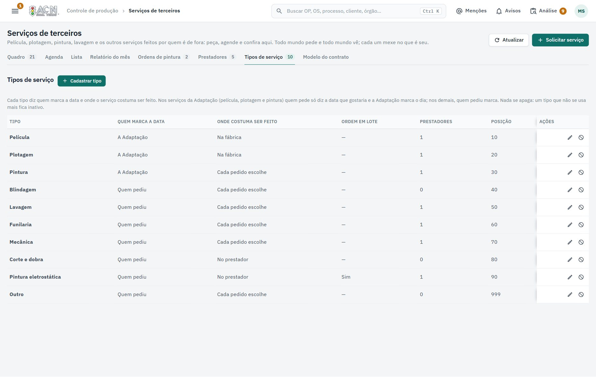
Quando usar: para criar um tipo novo (por exemplo, "Estofamento") ou mudar quem marca o dia de um tipo.
Quem faz: só o Admin. Os outros usuários veem a lista.
Passo a passo
- Abra a aba Tipos de serviço e clique em Cadastrar tipo (ou em Editar, o lápis).
- Escreva o Nome do tipo de serviço *.
- Escolha Quem marca a data *:
| Opção | O que significa |
|---|---|
| Quem pediu o serviço | Quem pede escolhe o prestador e marca o dia |
| A Adaptação | Quem pede só diz o dia que gostaria; a Adaptação escolhe o prestador e marca o dia |
Gerentes e Admin podem marcar a data em qualquer caso.
- Em Onde costuma ser feito, escolha Na fábrica (o prestador vem até aqui), No prestador (o carro ou a peça vai até lá) ou Cada pedido escolhe.
- A Posição na lista define a ordem (número menor fica mais acima).
- Marque Usa ordem de serviço em lote só nos serviços em que vários carros ou peças vão juntos numa ordem assinada (a pintura eletrostática). Os serviços deste tipo passam a aparecer na aba Ordens de pintura.
- Clique em Cadastrar ou Salvar.
O que acontece: a regra vale já para os pedidos novos e para os que estão abertos. Não precisa mexer em código. Como o dia de película, plotagem e pintura é marcado pela Adaptação, mudar essa regra aqui muda quem vê o botão Agendar no cartão.
Modelo do contrato
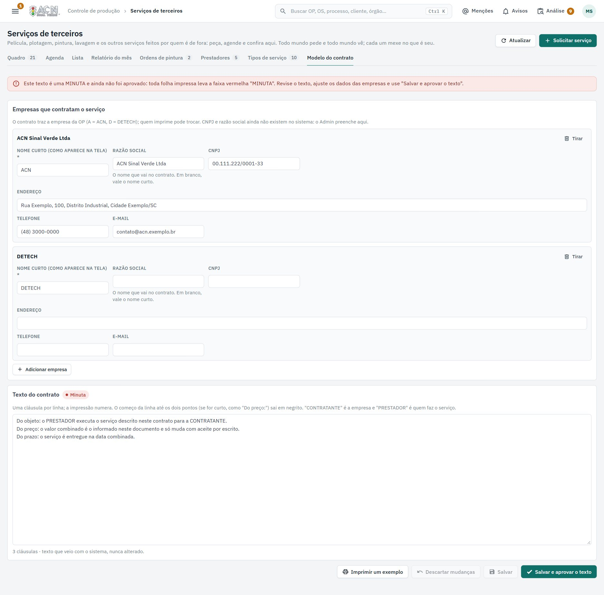
Quando usar: para dar ao contrato o texto das cláusulas e os dados das empresas que contratam. Enquanto o texto não for aprovado, toda folha impressa sai com a faixa vermelha "MINUTA".
Quem faz: só o Admin edita; todos leem o texto e os dados.
Passo a passo
- Abra a aba Modelo do contrato. No alto, uma faixa diz se o texto é uma MINUTA (vermelho) ou está aprovado (verde, com quem aprovou e quando).
- Em Empresas que contratam o serviço, confira cada empresa: Nome curto (como aparece na tela), Razão social (em branco, vale o nome curto), CNPJ, Endereço, Telefone e E-mail. Adicionar empresa acrescenta (até 6) e Tirar retira (sempre sobra ao menos uma).
- Em Texto do contrato, escreva uma cláusula por linha; a impressão numera. O começo da linha até os dois pontos, se for curto (como "Do preço:"), sai em negrito. "CONTRATANTE" é a empresa e "PRESTADOR" é quem faz o serviço.
- Imprimir um exemplo mostra a folha como vai sair (o exemplo sempre sai como minuta: é para ler, não para assinar).
- Clique em Salvar (guarda, ainda como minuta) ou em Salvar e aprovar o texto (guarda e tira a faixa "MINUTA" das folhas). Descartar mudanças volta ao que estava gravado.
O que acontece: o texto vale para todos os contratos e para as ordens da pintura. Mudar qualquer coisa de um texto já aprovado tira a aprovação: é preciso aprovar de novo, e as folhas voltam a sair como minuta até lá.
Baixar a planilha e imprimir o relatório
Quando usar: para levar o relatório do mês ao Excel ou para ter a folha em papel (ou em PDF) para conferir com o Financeiro.
Quem faz: qualquer usuário (cada um vê o que o seu acesso permite).
Baixar planilha
- No Relatório do mês, escolha o mês e clique em Baixar planilha.
- O arquivo Servicos_de_terceiros_AAAA-MM.xlsx traz três folhas:
| Folha | O que traz |
|---|---|
| Por prestador | Uma linha por prestador, com quantidades e (para quem vê valores) combinado, cobrado, diferença e o que falta pedir |
| Por tipo | O mesmo, por tipo de serviço |
| Serviços | Uma linha por serviço: número, tipo, descrição, ligação, prestador, dia, valores e situação do pagamento |
Os valores vêm como número (o Excel soma e ordena). Quem não vê valores recebe a planilha sem nenhuma coluna de dinheiro.
Imprimir
- Clique em Imprimir. Abre uma folha A4 com as tabelas Por prestador e Por tipo de serviço, o aviso dos serviços agendados em meses anteriores que seguem sem baixa e, para cada prestador, a lista dos serviços realizados. No rodapé vai o nome de quem gerou e a data e a hora (e, para quem não vê valores, a nota "sem valores").
- Na janela de impressão do navegador, escolha a impressora ou Salvar como PDF.
Parte 5Avisos, regras e dúvidas
Quem recebe cada aviso
O módulo avisa de duas formas: pelo Calendário e pelo painel Avisos (botão Avisos do topo).
| Situação | Quem recebe | Onde aparece |
|---|---|---|
| Serviço agendado para um dia | Quem pediu e, nos tipos da Adaptação (película, plotagem, pintura), a equipe da Adaptação | Calendário (o dia, o prestador e o tipo) |
| Data desejada de um pedido que ainda não foi agendado | Quem pediu e, nos tipos da Adaptação, a Adaptação | Calendário, só como lembrete (sem alerta) |
| Serviço que passou do dia agendado sem ser dado como realizado | Quem pediu e a Adaptação, nos tipos dela | Painel Avisos, seção Datas para cuidar (um aviso por visita e por dia); o botão Abrir leva ao serviço |
| Serviço realizado | Quem pediu | Calendário, só como registro (sem alerta) |
| Pintura da Serralheria concluída | O perfil Produção | WhatsApp: "escolha o prestador e o dia (ou entre numa ordem de pintura)" |
| Pagamento pedido | O Financeiro | Uma demanda nova na aba Demandas do Financeiro |
Quem pode o quê
| Ação | Quem pode |
|---|---|
| Pedir um serviço | Qualquer usuário |
| Ver o Quadro, a Agenda, a Lista e as ordens | Qualquer usuário |
| Imprimir o contrato | Qualquer usuário |
| Editar o serviço, agendar (tipos comuns), dar como realizado, voltar, cancelar, pedir pagamento, ligar a saída da vistoria | Quem pediu (e a Adaptação, nos tipos dela), gerentes e Admin |
| Marcar o dia de película, plotagem e pintura | Adaptação, gerentes e Admin (quem pediu só diz o dia desejado) |
| Dar como realizado película, plotagem e pintura | Quem pediu ou a Adaptação, gerentes e Admin |
| Montar, imprimir, enviar, fechar e cancelar a ordem de serviço em lote | Admin, gerentes e Adaptação |
| Cadastrar prestadores | Admin, gerentes e a aba Produção |
| Editar tipos de serviço e o modelo do contrato | Só o Admin |
| Ver valores (combinado, final, diferença, A pagar, dinheiro do relatório) | Quem tem a permissão de ver valores |
O que trava cada passo
| Passo | O que precisa estar certo |
|---|---|
| Pedir | Tipo escolhido, descrição com pelo menos 3 letras; carro que já tem serviço aberto do mesmo tipo fica de fora (Pedir mesmo assim libera) |
| Agendar | Prestador, dia e período; o serviço não pode estar numa ordem montada ou enviada |
| Dar como realizado | Prestador, dia (não no futuro) e valor final (zero vale) |
| Voltar, reabrir, cancelar | Motivo com pelo menos 5 letras |
| Pedir pagamento | Serviço realizado, valor final maior que zero, um só prestador e sem pedido aberto |
| Enviar as peças (ordem) | Cópia assinada anexada, dia do envio (não no futuro nem mais de 60 dias atrás) e previsão de retorno |
| Fechar a ordem | Dia do retorno e valor final de cada serviço |
| Tirar serviço de uma ordem | Motivo, e a ordem não pode ficar vazia |
| Salvar e aprovar o contrato | Ao menos uma empresa com nome e texto das cláusulas preenchido |
Quando a tela não consegue ler
A regra do módulo é nunca dizer "não tem nada" quando, na verdade, não conseguiu ler. Se uma leitura falhar, você vê uma faixa vermelha dizendo que não foi possível ler, com Tentar de novo. Isso vale para o Quadro, a Agenda, a Lista, as ordens, o relatório e o quadro Serviços de terceiros da OP e da OS. Quando o que falhou foi só a situação do pagamento ou da saída da vistoria, o serviço aparece com um selo neutro (Pagamento pedido, situação não lida ou Saída ligada), sem afirmar o que não foi lido.
Os serviços que já nasceram da caixinha da OP
Em 23/11/2026, as OPs que estavam no PCP, no Almoxarifado e na Adaptação com a caixinha Necessita serviço de terceiro marcada viraram serviços do módulo: 154 OPs, 23 vendas, 203 serviços (TS-00001 a TS-00203), todos em A definir.
- Eles estão sem prestador, sem dia, sem valor e sem lista de peças.
- Foram criados em nome de "Migração (caixinha da OP)", sem solicitante: por isso, nesses serviços, só a diretoria e, nos tipos da Adaptação, a Adaptação conseguem mexer.
- A OP marcada sem tipo virou Outro, com a observação de escolher o tipo certo ou cancelar.
- Nas vendas 1583.2608 e A1226.2604 a pintura virou Pintura eletrostática; nas outras vendas (A1731.2610, A1799.2611 e A1347.2606) entrou como Pintura comum.
- As OPs que já tinham passado dessa fase (CQ em diante) ficaram de fora.
Dúvidas comuns
Pedi uma película e não consigo agendar. O dia de película, plotagem e pintura é marcado pela Adaptação. Você ficou com o selo Sem data e já deixou o dia desejado para a Adaptação ler. Se a Adaptação não está vendo, chame o Admin para conferir o tipo na aba Tipos de serviço.
A OP só de serviço de terceiro não anda. Confira no Dossiê da OP, quadro Serviços de terceiros: ela só vai à Liberação Comercial quando todos os serviços estão realizados (e ao menos um foi feito). Serviço ainda em A definir ou Agendado segura a OP; se todos foram cancelados, a OP fica parada de propósito.
Não consigo mexer no serviço. Ou ele está numa ordem de serviço em lote montada ou enviada (a janela mostra a faixa azul com Abrir a ordem), ou é um dos 203 serviços da migração (só diretoria e Adaptação mexem), ou foi pedido por outra pessoa e o tipo não é da Adaptação.
O prestador que eu preciso não aparece. Ele não faz aquele tipo (Prestadores › Que serviços faz), está inativo ou ainda não foi cadastrado. Quem cadastra: Admin, gerentes e Produção.
Apareceu "Choque de data" em vermelho. O mesmo prestador tem outra visita no mesmo dia e período. É só um aviso: você pode agendar mesmo assim. Lembre que a mesma venda, no mesmo prestador e dia, é uma visita só: carros da mesma venda não batem entre si.
Quero pedir de novo um serviço que o sistema diz que já existe. O aviso vermelho mostra o número do serviço aberto do mesmo tipo para aquele carro. Se for mesmo outro serviço, marque Pedir mesmo assim.
O relatório não bate com a Lista. A Lista mostra o que está em aberto e o que terminou nos últimos 120 dias; o relatório lê o mês escolhido inteiro, pelo dia em que o serviço foi realizado. Serviço agendado em mês anterior e sem baixa não entra nas contas (aparece só na faixa âmbar).
O contador "A pagar" não aparece. Ele só aparece para quem vê valores. O mesmo vale para o cartão A pedir ao Financeiro do relatório.
O "A pagar" não baixou depois de pedir o pagamento. O contador baixa quando o pedido nasce como demanda no Financeiro. Se o selo do serviço diz situação não lida, a tela não conseguiu ler a demanda: clique em Atualizar. Se o Financeiro cancelou a demanda, o serviço volta a "A pagar": peça de novo.
Pedi o pagamento do prestador errado. Fale com o Financeiro para cancelar a demanda; o serviço volta a "A pagar" e você pede de novo, já com o prestador certo.
Cancelei por engano. O cancelado não volta: peça o serviço de novo. O pedido antigo continua no filtro Cancelados, com o motivo.
O contrato saiu com a faixa "MINUTA". O Admin ainda não aprovou o texto na aba Modelo do contrato. Não assine a folha: peça a aprovação e imprima de novo.
O contrato saiu com campos em branco. É de propósito: o que o cadastro não tem (CNPJ do prestador, endereço, chassi…) sai em branco para escrever à mão. Para sair preenchido, complete o cadastro do prestador ou o modelo do contrato.
A janela de impressão não abriu. O navegador barrou a janela. A tela avisa em vermelho: libere as janelas deste endereço e clique de novo.
A Serralheria concluiu a peça e não nasceu a requisição do Compras. É a regra nova: a pintura vira serviço de Pintura eletrostática neste módulo. Se não nasceu o serviço, a demanda ganhou o botão Pedir a pintura agora (vale até 30 dias depois de concluída).
FimHistórico deste manual
- 23/11/2026 — Primeira versão do manual, com 24 fotos das telas (dados de exemplo): o Quadro, a Agenda, a Lista e o Relatório do mês; pedir, agendar, dar como realizado, voltar, reabrir e cancelar; o pedido de pagamento ao Financeiro; a saída da Vistoria de pátio; a ordem de serviço em lote da pintura eletrostática (montar, imprimir, enviar com a cópia assinada, retorno e fechamento); o contrato impresso; a pintura da Serralheria; o quadro Serviços de terceiros na OP e na OS; os cadastros de prestadores, tipos e o modelo do contrato; quem recebe cada aviso; quem pode o quê; o que trava cada passo; os 203 serviços que vieram da caixinha da OP; e as dúvidas comuns.
- 23/11/2026 — Relatório do mês por prestador: quantos serviços cada prestador fez no mês (pelo dia em que foi realizado), quanto estava combinado, quanto cobrou, a diferença, o que já foi pago, o que foi pedido ao Financeiro e o que ainda falta pedir (a mesma conta do contador A pagar), mais a coluna Ainda a fazer. Tem um quadro por tipo de serviço, baixa uma planilha do Excel com três folhas e imprime uma folha A4. Quem não vê valores vê só as quantidades.
- 25/11/2026 — OP só de serviço de terceiro: novo fluxo de entrega para a venda que é só plotagem, película, pintura e afins. A OP não passa pelo PCP, pelo Almoxarifado nem pela Adaptação: nasce em Aguardando serviço de terceiro, com um serviço aberto por tipo e por unidade, e, quando todos os serviços estão realizados, o sistema a leva sozinho à Liberação Comercial (ou ao Fiscal, no faturamento antecipado), sem Controle de Qualidade. Nova seção no passo a passo e uma dúvida comum; sem fotos novas por enquanto.